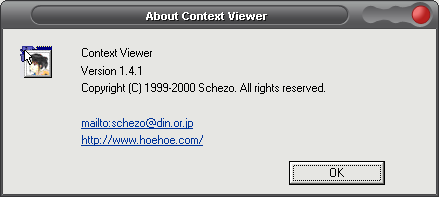

This programme is similar to PicaView.

You can use plugins from an application named Susie. Susie by itself is a Japanese freeware image editor/viewer.
The plugins allow you then to preview pictures in the context meny (right click) of the windows explorer.

Problems:If you have installed Notepad++ the explorer context menu entry destoys the dislay as seen above. Just delete the following key in the registry to get a fast fix.
[HKEY_CLASSES_ROOT\*\shellex\ContextMenuHandlers\ANotepad++]
Official Susie Page
Susie Page with Lots of Plugins
Another download page.